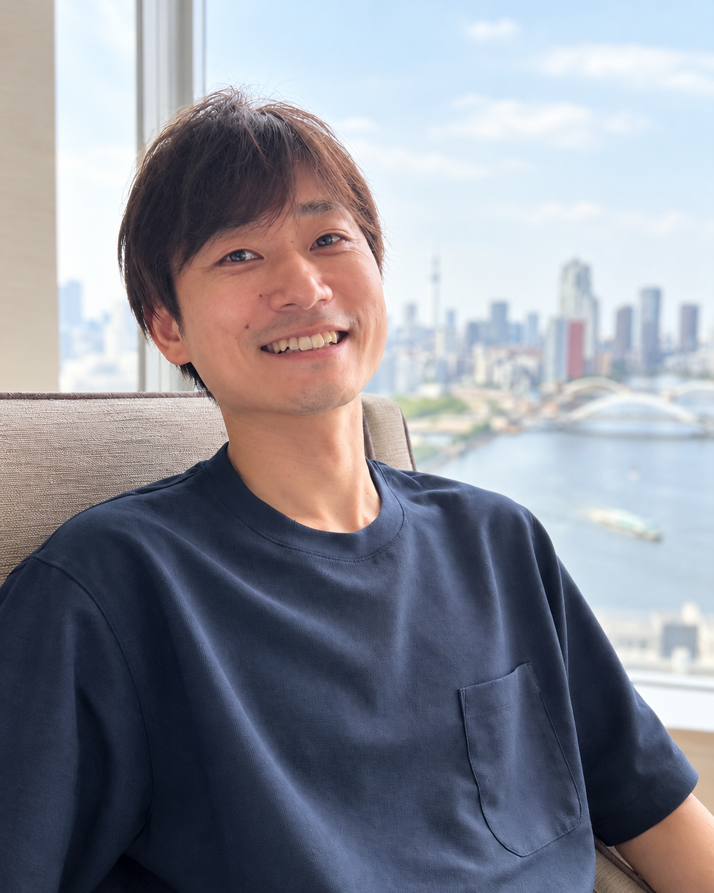

OPERATOR INFORMATION
運営者情報
子育ての選択肢を、もっと身近に。
MATE CAREの運営についてご案内します。

NextEdu代表
斎藤 幸輔KOSUKE SAITO
これからの時代の新しい教育の必要性と教育の多様性を求めて、コンサルティング会社を経て、大手教育グループ企業や東証プライム上場グループ企業にて小・中・高校生向けのプログラミング教育事業の新規事業立案及び事業立ち上げを推進し、代表や事業統括責任者を歴任。
子ども一人ひとりの可能性と創造力を伸ばす学びを大切にしてきました。
教育事業を長く運営し、一児の父として子育てをする中で、子育てのサポートや家族に合うサービスや体験を探す難しさを感じ、MATEを立ち上げました。自身も約1年間の育児休業を取得し、キャリアブレイクを通じて子育てに向き合っています。教育事業で培った経験と保護者としての視点を生かし、子育て家庭の選択肢をもっと身近にすることを目指しています。
経歴等
- 明治大学商学部卒業／在学中に教員免許を取得
- 事業創造大学院大学修了（MBA）
- 内閣府 ソーシャルベンチャースタートアップマーケット 第3期メンバー
- 外務省 地域の魅力発信若手リーダー米国派遣事業 第1陣メンバー
- Slogan Viling VENTURES Edtech Acceleratorプログラム 第1期メンバー
- 総務省 若年層に対するプログラミング教育の普及推進事業（新潟県） プロジェクトマネージャー
監修書籍
MATE CARE
- 運営情報
- 子育ての頼れる相棒｜MATE
- 運営
- NextEdu
- 代表者
- 斎藤幸輔
- サービス名
- MATE CARE
- サービス内容
- シッター・育児サポート事業者の情報提供、子育て家庭のサービス探しのサポート
- お問い合わせ
- kosodatemate@gmail.com掲載内容の訂正・削除、サービスへのお問い合わせ、営業メールの配信停止を受け付けます。
掲載・お問い合わせについて
事業者の掲載をご希望の方は、掲載相談フォームをご利用ください。掲載情報の訂正や削除をご希望の場合は、事業者名と該当ページのURLを添えて運営窓口へご連絡ください。
営業メールの配信停止をご希望の場合は、上記のメールアドレスへ「配信停止」とご連絡ください。以後の営業メールの送信を停止します。
シッティングの提供・料金・契約・安全管理は各事業者が行います。ご利用に関する具体的な条件は、各事業者の公式情報をご確認ください。
更新日：2026年10月12日